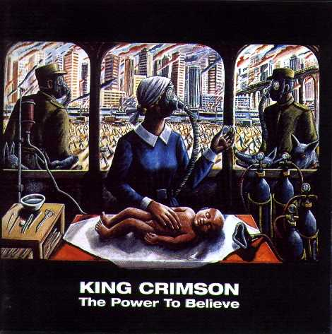
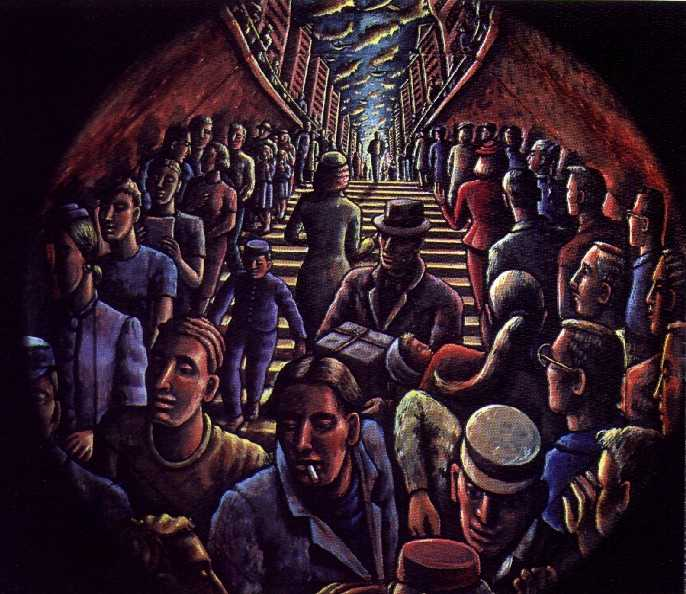
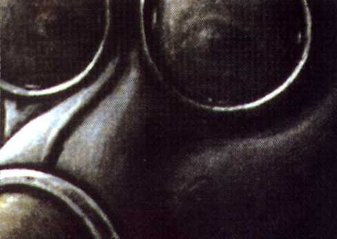

The power to believe
The power to believe
|
|
|
 The power to believe(El poder de creer) Editado en 2003 con la misma formación que el anterior, es el disco nº 13 en estudio. Excelente. Tanto por cada uno de los temas como por el conjunto como unidad. Si bien no repite nada anterior, por el contrario avanza, quizás deliberadamente hay remembranzas de las raíces y de la historia de la banda, tanto en lo musical como en el arte gráfico, conformando una gran síntesis, pero mirando al futuro. La hermosa melodía que dá nombre al disco tiene 3 partes; la primera lo comienza a capela, la segunda está en medio del álbum y la tercera lo termina, haciéndonos remontar al rol de los temas Peace... (...a beginning, ...a theme, ...an end) en la estructura del album "In the wake of Poseidon" de 1970. Y hablando de "In the wake...", el tema Dangerous curves nos adentra en el clima de The devil triangle de aquel disco; aquí los acordes "orquestados" de la guitarra de Fripp hacen el fondo que antes hacía el melotrón, y la guitarra de Belew, junto con Gunn y Mastelotto, repiten in crescendo y rítmicamente una estructura, como lo hacían bajo, batería y piano en el instrumental del '70. El tema Level five es la quinta parte de Larks' tongues in aspic; en su parte media continúa el estilo iniciado con el tema Thrak del '95 y seguido por Larks' IV del '99. Elektrik retoma la forma musical de los temas Discipline y The construKction of light, pero es más potente. Con Eyes wide open respiramos las suaves canciones del KC de los '80; Facts of life y Happy with... muestran el lado heavy de la banda (que siempre lo tuvo, desde los inicios en el '69); con The power to believe II y III afloran los ProjeKcts; la parte II es una de las piezas más hermosas hechas por KC, contiene un tramo percusivo de varios componentes conformando un gamelán moderno con aire asiático. El último tema (Coda) es de soundscapes de Fripp grabado en vivo en diciembre del '97, con la voz de Belew agregada en estudio. Es uno de los mejores discos de KC, hace sentir que aún hay mucha cuerda. Nos devuelve el poder de creer.
Letras de Belew, música firmada por el grupo. Notas * El tema Level five en un principio se llamaba Larks' tongues in aspic Part V; al grabarse el album se lo rebautizó, pero en la gira europea de 2018 volvió a ser listado con su nombre original. * Arte gráfico: Los dibujos del libro y la cubierta del disco, de la pintora P.J. Crook, son parte importante del album. Los tres primeros discos de la banda mostraban ilustraciones de personajes, personas, gente, en situaciones, con gestos, acciones, emociones. Después, nunca más en álbumes de estudio, hasta éste. La pintura de la portada principal (ver más arriba), es desgarradora; forma parte de una obra llamada "Fin de siecle" (Fin de siglo) y tiene mucho que ver con el sentido de la letra del tema 21 Century schizoid man del primer album. Máscaras antigases... ¿por la polución? ¿por las armas químicas? ¿por ambas cosas? Otra pintura del CD (mostrada abajo) nos remonta a la letra del tema Pictures of a city, del album "In the wake of Poseidon".   La portada posterior muestra un rostro cubierto con una máscara antigas; solo se ven los ojos, que nos hacen recordar a los ojos de aquel rostro atormentado dibujado en la tapa del primer album. ¿Es el mismo rostro, en otra época y otro lugar?.Es que lamentablemente muchas cosas no cambiaron en estas décadas. Por el contrario, se cumplen las visiones y los temores reflejados en las letras de 21 Century schizoid man y de Epitaph. Estas pinturas nos recuerdan lo que pasa, y que muchos momentos de la música de KC reflejan esa cruda realidad, tal como la primera vez, 34 años antes, como ninguna otra banda de rock lo hizo.
[otras portadas de P.J. Crook]
|